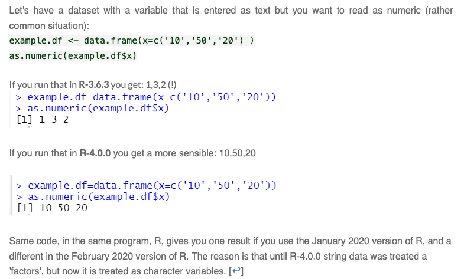

Computational Reproducibility: Dependencies
Managing external dependencies is critical to ensuring that you can maintain computational reproducibility when you move your code to a new computer.
Dependencies
If you wish to make an apple pie from scratch, you must first invent the universe
– Carl Sagan
Dependencies are essentially prerequisites – the things you need to
complete a task. For example, so far, we require both R and some of the
packages in TidyVerse to run the code we’ve written.
Dependencies – and tracking dependencies – are a significant issue in
computationally reproducible research.
Part of good research data management when using a scripting language is finding ways of tracking and documenting dependencies. At it’s simplest, this means recording somewhere:
- your operating system and version
- your scripting language and version
- your extra packages or libraries and their versions.
This information provides a framework for creating a computationally reproducible environment. But even this documented framework can be insufficient.
Environments
We can break addressing dependencies down into three distinct categories, levels, or environments that need to be addressed:
- Keeping a stable R environment
- Maintaining relationships to external programs
- Keeping a stable operating system environment
Stable R Environment
We’ve talked about base R and about extending it with additional packages or libraries. It is very possible that an updated package or an updated version of R could break your code.
Base R packages are generally quite robust to backwards compatibility, but not always. A few examples:
- When R 3.6 was released, an update to
set.seed()that is used for reproducible results when random number generation is needed – i.e. you need to take a random sample from your dataset – broke several packages that relied onset.seed(). - Similarly, when R 4.0 was released, updates to
the matrix object had its class changed from
arraytoc("matrix", "array")breaking any packages that relied on testing the class of this data structure usingclass(). - Finally, and this will be covered in more detail in the next lesson, but we will be working with factor data, so another, potentially more relatable example is the change made with the update to R 4.0 to not have characters translated to factors by default on import. This change risked breaking a lot of code. See this example from Uri Simonsohn with Data Colada:

This kind of break is much more common with external packages. Even
when these packages have robust compatability standards, like with
TidyVerse – you can
read about their versoin support here. Later, we’ll be using the
distinct() function from the dplyr package
that is part of the TidyVerse. A 2016 update to the function changed its
default behaviour effectively reducing the number of variables preserved
by the function. Running a script written with the earlier version of
distinct() could well break under a later version of the
same function.
This kind of change that comes with an update is common enough to be a significant issue. The above Data Colada article provides a few more examples and links to others.
More importantly, this may not happen just on your machine. We want to make sure that your code is transferable to another person’s computer and will still run irrespective of how they have set up their R environment. We’ll explore one solution to this in R, but will first look at what happens to external R packages that can cause issues when code is moved to another computer.
External programs
Some R functions and packages are reliant on external programs. The
knitr package that allows RMarkdown documents to be
converted between document types (producing html, pdf, etc documents),
and that we are using in this workshop, is a good example of this.
Depending on what document type you’re exporting your .Rmd file to,
knitr relies on external programs such as Pandoc and LaTeX. Considering this, it
can be challenging to ensure that over time and across systems your .Rmd
files will in fact output in the way that you expect. In this instance,
this doesn’t nullify your code, just the conversion process from .Rmd to
.html or .pdf.
Another example is being able to read Excel files into R. And this will lead us into the next consideration of keeping a stable system.
There is more than one package available in R to load in Excel files.
One, xlsx requires that Java, another programming language,
be installed on the user’s machine. Not everyone has Java, or the right
version of Java, installed on their machines. Because of this,
xlsx is very prone to breaking code across machines. A
second is readxl from the TidyVerse. readxl
uses two libraries whose licensing allows for redistribution with
someone else’s code, so, readxl includes and installs these
libraries when the readxl package is installed. It is much
more robust when moved across computers and operating systems.
Maintaining relationships to external programs is very challenging. If using packages external to base R and the TidyVerse, you should read about these packages first and learn about their dependencies and use them only if they work with your needs as they relate to reproducibility, and, as necessary, maintain robust documentation about them.
Keeping a Stable System
We mentioned above that readxl uses two external
libraries – this is very common in computer programs – if one person has
solved a problem, i.e. how to read in proprietary Excel files into
another application, and is willing to share that solution, no one else
needs to solve that same problem.
However, for a variety of reasons, not all ‘shared’ libraries, as
these are referred to, are bundled the way they are in
readxl. In these instances, these libraries usually sit
somewhere else that is globally accessible to any application on your
computer. The only way to resolve this kind of dependency is to make a
copy of your entire operating system that includes any external programs
and your R environment.
This is far more than we cover here, but a popular option to facilitate creating a copy of your complete computing environment is using an application called Docker.
Overall Considerations
Consider what your specific needs are before venturing down these
routes. A small project written in only base R likely needs only to
record the version of R it is using. A project that uses only
self-contained external R packages only needs renv – see
below. A project that has external program dependencies may suffice to
simply document what these dependencies are and what needs to be
installed to resolve them. It is only in large, complex projects, and
one’s where a risk assessment determines that computational
reproducibility is critical, that you would consider resorting to a
solution like Docker.
A Reproducible R Environment
How to resolve the R dependency problem? A popular option is with the
renv package.
Before we begin, it’s important to draw a distinction here between a
package and a library in R. A package is a set of functions and data.
We’ve seen many of the functions included in the TidyVerse
set of packages. A library is a place where these packages are stored on
your computer. You can see where your packages are stored with
.libPaths().
.libPaths()## [1] "/Library/Frameworks/R.framework/Versions/4.3-arm64/Resources/library"Note that, by default, these are not stored with your R project. So when you move your project folder, you don’t also move your additional packages.
A simple way to handle this is to use the renv package,
which installs your packages in your project folder as well and
maintains detailed information about them so that should they need to be
re-installed they can be and with the exact same version. Thus, you end
up with a stable, reproducible R environment.
renv in Action
First we install, load, and initialize renv – this only
needs to be done once.
install.packages("renv")
renv::init()You’ll notice that we’re using a different way of calling the
init() function here, first noting the package that it’s in
renv followed by two colons ::. Similarly to
how in day 2 we loaded all of TidyVerse with
library(TidyVerse), but later today we’ll only load one
package from the TidyVerse, dplyr, to trim down how much
we’re loading into memory, we can also load only specific functions from
a package – we don’t call library(), we just reference the
package, and then call the function of interest.
The init() function does a couple of things. It:
- populates your .Rprofile with a line to be read every time you
launch your project to
activate()renv - creates a
renv/directory where your local libraries are installed. - creates a
renv.lockfile that maintains metadata about the libraries you’re using in the project.
In fact, if we run .libPaths() again, we’ll see the
output has changed and that there are two library paths now.
.libPaths()## [1] "/Users/vdunbar/Library/CloudStorage/OneDrive-UBC/_tmp/bootcamp_website/rdm-jumpstart/renv/library/R-4.3/aarch64-apple-darwin20"
## [2] "/Users/vdunbar/Library/Caches/org.R-project.R/R/renv/sandbox/R-4.3/aarch64-apple-darwin20/ac5c2659"Once intialized, renv is ready to start installing
packages locally.
If you already have saved .R or .Rmd files, init() will
attempt to locate the packages your’re using and install them
locally.
If you’re initializing renv before saving any files,
you’ll need to manually install the packages you’ll be using going
forward, even if you’ve previously installed these by this stage,
because renv is looking in our project folder for
packages.
renv has an install function that is more verbose than
install.packages() from base R.
renv::install("TidyVerse")Installing a package doesn’t add the details of this package to your
renv.lock file; this only happens when you actively call a
package in an .R or .Rmd file and instruct renv to make a
record of this.
First you load the newly installed package.
library(TidyVerse)Then you take a snapshot(), which tells
renv to document the packages you’ve used in your scripts.
In our case, we only need to do this once, since we’re only using
packages that are contained within TidyVerse.
renv::snapshot()The renv.lock file
This is what the renv.lock file looks like on the
inside:
## {
## "R": {
## "Version": "4.3.1",
## "Repositories": [
## {
## "Name": "CRAN",
## "URL": "https://cloud.r-project.org"
## }
## ]
## },
## "Packages": {
## "DBI": {
## "Package": "DBI",
## "Version": "1.2.3",
## "Source": "Repository",
## "Title": "R Database Interface",
## "Date": "2024-06-02",
## "Authors@R": "c( person(\"R Special Interest Group on Databases (R-SIG-DB)\", role = \"aut\"), person(\"Hadley\", \"Wickham\", role = \"aut\"), person(\"Kirill\", \"Müller\", , \"kirill@cynkra.com\", role = c(\"aut\", \"cre\"), comment = c(ORCID = \"0000-0002-1416-3412\")), person(\"R Consortium\", role = \"fnd\") )",
## "Description": "A database interface definition for communication between R and relational database management systems. All classes in this package are virtual and need to be extended by the various R/DBMS implementations.",
## "License": "LGPL (>= 2.1)",Rebuilding Your R Environment
Packages can take up a lot of space, so generally, you don’t share
your packages or library folder with others when you share your R
project. Instead, you just share a few of the renv
generated files, including the:
renv.lockfile – the metadata about the packages used.Rprofilefile – launchesrenv/activate.Rat startuprenv/activate.Rfile – checks the setup on startup and will installrenvif it’s not installedrenv/settings.jsonfile – settings forrenv.
This set up is intended for using a version control system like Git.
We’re going to simplify things for ourselves here by only using the
renv.lock file when sharing. So, you can ignore the hidden
file .Rprofile and the renv/ directory.
This does mean that any collaborators will need to install
renv first on the their machines – if we included the other
files, on project start-up renv would be installed if it
wasn’t already. Then, they run renv::activate(), which gets
renv up and running in the project, followed by
renv::restore(), which rebuilds your R environment on their
machine.
At the end of today, when we upload our data and .Rmd files to OSF,
we will now also include the renv.lock file. We should also
update our readme with the renv setup instructions.
Read more about the renv package at https://rstudio.github.io/renv/articles/renv.html


This work is licensed under a Creative Commons Attribution-NonCommercial 4.0 International License
Built and rendered courtesy of RMarkdown from RStudio